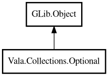

Optional
Object Hierarchy:

Description:
public class Optional<T> : Object
A container object that may or may not contain a value.
Optional is a type-safe alternative to null. Instead of returning null, methods can return Optional to explicitly indicate that a value
may be absent. Inspired by Java's Optional, OCaml's option, and Rust's Option.
Example:
var opt = Optional.of<string> ("hello");
assert (opt.isPresent ());
assert (opt.get () == "hello");
var empty = Optional.empty<string> ();
assert (empty.isEmpty ());
assert (empty.orElse ("default") == "default");
Content:
Static methods:
- public static Optional<T> empty<T> ()
Creates an empty Optional with no value.
- public static Optional<T> of<T> (owned T value)
Creates an Optional containing the given value.
- public static Optional<T> ofNullable<T> (owned T value)
Creates an Optional from a nullable value. If the value is null,
returns an empty Optional; otherwise wraps the value.
Methods:
- public T @get ()
Returns the contained value. Returns null if no value is present.
- public Optional<T> filter (owned PredicateFunc<T> predicate)
If a value is present and matches the predicate, returns this
Optional; otherwise returns an empty Optional.
- public void ifPresent (owned ConsumerFunc<T> func)
If a value is present, invokes the given function with the value.
- public bool isEmpty ()
Returns whether this Optional is empty.
- public bool isPresent ()
Returns whether a value is present.
- public T orElse (T other)
Returns the value if present, otherwise returns the given default
value.
- public T orElseGet (owned SupplierFunc<T> supplier)
Returns the value if present, otherwise invokes the supplier function
and returns its result.
Inherited Members:
All known members inherited from class GLib.Object
- @get
- @new
- @ref
- @set
- add_toggle_ref
- add_weak_pointer
- bind_property
- connect
- constructed
- disconnect
- dispose
- dup_data
- dup_qdata
- force_floating
- freeze_notify
- get_class
- get_data
- get_property
- get_qdata
- get_type
- getv
- interface_find_property
- interface_install_property
- interface_list_properties
- is_floating
- new_valist
- new_with_properties
- newv
- notify
- notify_property
- ref_count
- ref_sink
- remove_toggle_ref
- remove_weak_pointer
- replace_data
- replace_qdata
- set_data
- set_data_full
- set_property
- set_qdata
- set_qdata_full
- set_valist
- setv
- steal_data
- steal_qdata
- thaw_notify
- unref
- watch_closure
- weak_ref
- weak_unref